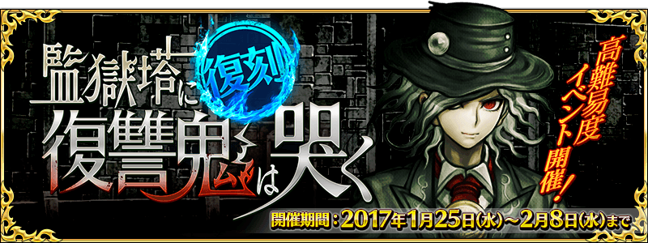
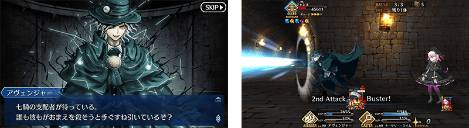
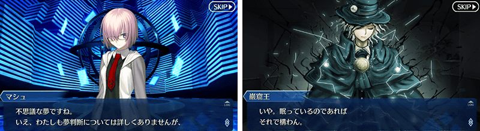
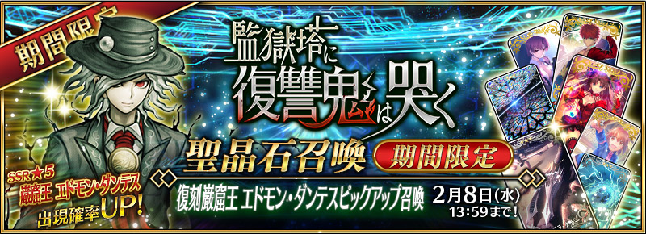
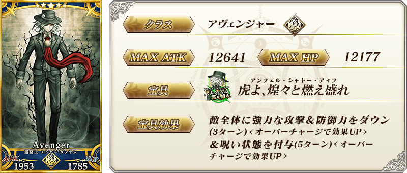
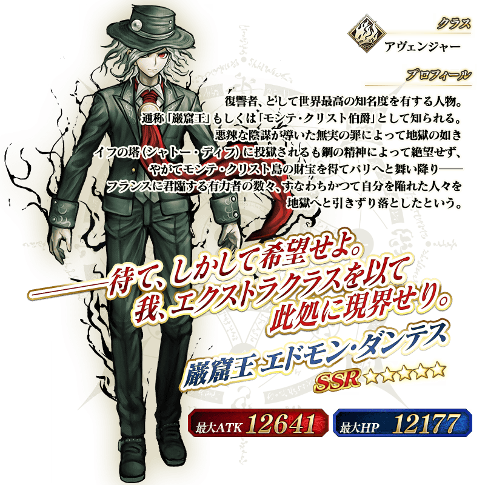

◆活動舉辦期間◆
2017年1月25日(三) 16:00～2月8日(三) 12:59
◆活動概要◆
一覺醒來，熟悉的迦勒底竟變成了監獄塔…！
被囚禁在夢與現實狹縫中的Master，能平安無事從監獄塔越獄嗎？
期間限定活動「復刻：監獄塔中復仇鬼慟哭」是以上級者為對象的高難易度活動。
挑戰每天開放的高難易度關卡，獲得報酬吧！
※本活動為復刻於2016年舉辦的「監獄塔中復仇鬼慟哭」的「復刻活動」。
※故事與2016年舉辦時相同內容。
◆活動参加條件◆
只有通過「第四特異點 死界魔霧都市 倫敦」的Master才能參加

關卡在下列時間各開放1關。
※必須通過已開放關卡，下個能挑戰的關卡才會出現。
| 關卡開放日時 | 通過報酬 |
|---|---|
| 1月25日(三) 16:00～ | 呼符 1枚 |
| 1月25日(三) 23:00～ | 呼符 1枚 |
| 1月26日(四) 23:00～ | 呼符 1枚 |
| 1月27日(五) 23:00～ | 呼符 1枚 |
| 1月28日(六) 23:00～ | 呼符 1枚 |
| 1月29日(日) 23:00～ | 呼符 1枚 |
| 1月30日(一) 23:00～ | 伝承結晶 1個 |
通過全部活動關卡通過的話，會開放以通過「終局特異點」Master為對象的高難易度關卡「挑戰關卡」。
在初次通過挑戰關卡時，可獲得豪華報酬。
挑戰關卡在通過後也不會消失，能無數次挑戰，可以變更Servant和概念禮裝的組合後再次挑戰。
※只限初次通過時才能獲得關卡通過報酬及掉落報酬。
◆挑戰關卡参加條件◆
只有通過「終局特異點」及「復刻：監獄塔中復仇鬼慟哭」全部主線關卡的Master才能參加
◆挑戰關卡初次通過報酬◆
呼符 3枚
配合期間限定活動「復刻：監獄塔中復仇鬼慟哭」的舉辦，追加巖窟王愛德蒙・唐泰斯的幕間物語！
◆追加時間◆
2017年1月25日(三) 16:00～


期間限定活動「復刻：監獄塔中復仇鬼慟哭」為只有通過「第四特異點 死界魔霧都市 倫敦」的Master才能参加的活動。
另外，「挑戰關卡」只有通過「終局特異點」的Master才能挑戰。
因此，直到「終局特異點」為止的主線關卡做為對象，舉辦主線關卡AP消費1/2宣傳活動。
無論如何藉此機會推進主線關卡，參加活動吧！
◆舉辦期間◆
2017年1月21日(六) 16:00～2月8日(三) 12:59
◆對象關卡◆
直到終局特異點為止的全部主線關卡
※自由關卡、強化關卡、幕間物語為對象外。

◆「復刻巖窟王 愛德蒙・唐泰斯Pick Up召喚」期間◆
期間：2017年1月25日(三) 16:00～2月8日(三) 12:59
以期間限定舉辦「復刻巖窟王 愛德蒙・唐泰斯Pick Up召喚」！
完全復刻於2016年舉辦的巖窟王 愛德蒙・唐泰斯Pick Up召喚！
「★5(SSR)巖窟王 愛德蒙・唐泰斯」以期間限定Pick Up！
詳情請在聖晶石召喚畫面左下的召喚詳細確認。
※巖窟王 愛德蒙・唐泰斯在Pick Up期間結束後，不會追加到故事召喚。
Pick Up期間中期間限定Servant的出現機率提升！
10次召喚中確定1張★4(SR)以上和確定1位★3(R)以上的Servant！
※確定★4(SR)以上包含Servant和概念禮裝。
※所謂「出現機率提升」意指比同稀有度的Servant及概念禮裝出現機率更高的設定。

※1/23(一)修正

※1/23(一)修正